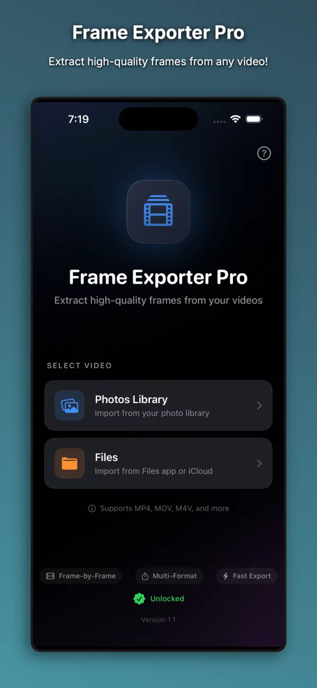
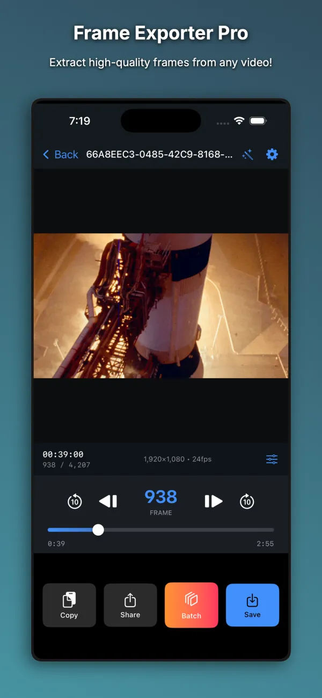
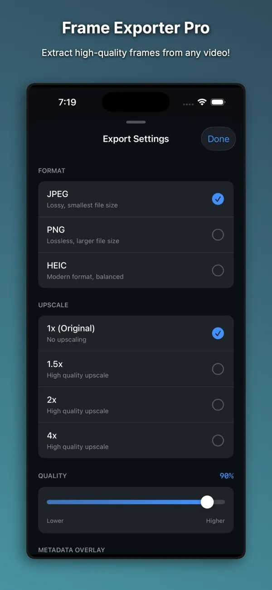
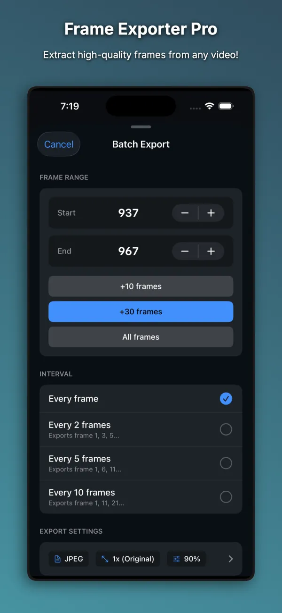
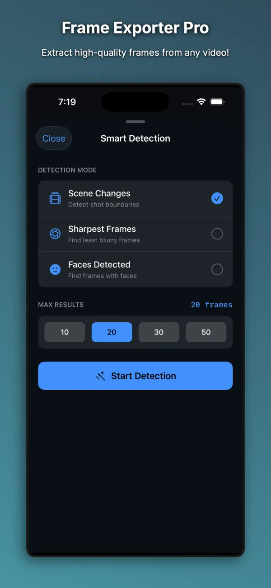

For iPhone and iPad. Requires iOS 26.0 or later.
Frame Exporter Pro
Extract still frames from videos with frame-by-frame control.
Frame Exporter Pro lets you step through videos one frame at a time and save still images in JPEG, PNG, or HEIC format. It is built for video editors, photographers, content creators, and anyone who needs a specific frame from a video clip.
Free to download. Optional one-time Premium Unlock, $4.99.

What it does
Frame-by-frame timeline scrubbing
Scrub through any video with a live preview and HH:MM:SS:FF timecode display. Step forward or back by a single frame or in 10-frame increments to land on the exact moment you need.
Flexible export formats
Export still frames as JPEG, PNG, or HEIC with adjustable image quality from 10% to 100%. The export sheet shows source resolution, output dimensions, and an estimated file size before you save.
High-resolution frame upscaling
Increase output resolution by 1.5x, 2x, or 4x when exporting frames from lower-resolution clips. Exported files receive automatic filenames that include the frame timecode.
Photos and Files import
Open MP4, MOV, and M4V videos from your Photos library, the Files app, or iCloud Drive. Save finished frames to Photos, copy them to the clipboard, or share them through AirDrop, Mail, and Messages.
How it works
Import a video
Choose a video clip from your Photos library, the Files app, or iCloud Drive.
Find the exact frame
Scrub along the timeline and use the single-frame or 10-frame step buttons while checking the timecode display.
Choose export settings
Select your image format, compression quality, and upscale factor while viewing the estimated file size.
Save or share
Save the extracted frame to your Photos library, copy it to the clipboard, or send it through the iOS share sheet.
Screenshots




Free and paid
Free to download. Optional one-time Premium Unlock, $4.99.
Free
- Full frame-by-frame scrubbing, 10-frame step controls, and timecode display
- Up to 5 frame exports per day
- JPEG export at original 1x video resolution with adjustable quality
- Automatic timecode filenames, save to Photos, clipboard copy, and sharing
Premium Unlock, $4.99
- One-time $4.99 Premium Unlock with no subscription
- Unlimited daily frame exports
- PNG and HEIC export formats in addition to JPEG
- 1.5x, 2x, and 4x resolution upscaling
Get Frame Exporter Pro
For iPhone and iPad. Requires iOS 26.0 or later. Questions are answered on the Help page, and the privacy policy explains what stays on your device.